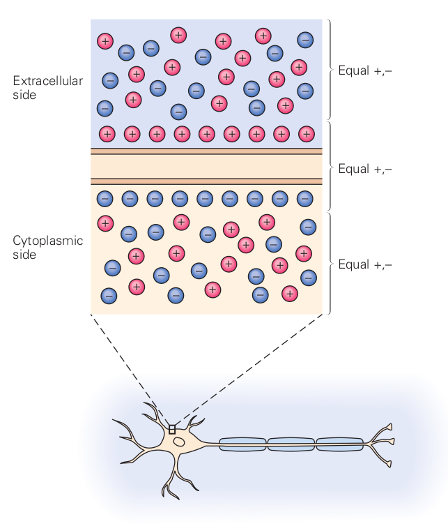

We assume that, in a balanced state, the concentrations on the two sides of the membrane are and , respectively; furthermore we assume that
To simplify the math writing, we neglect the change caused by considering the difference (maybe we should apply a near-unity factor); we use the larger concentration magnitude instead. Using the constants and , and that , we can derive the equivalent ”thermodynamic electrical field” for the case of a permeable ion channel in the membrane
| (2.51) |
It does not depend on the concentrations and depends reciprocally on the membrane thickness (given in ); furthermore, it is valid separately for all
| (2.52) |
For a membrane thickness, it results in , which compares well to the the electrically derived value delivered by Equ.(2.70). Figure 2.7 depicts its dependence on the membrane’s width and how it compares to the charge-generated electrical field. Correspondingly,
| (2.53) |
In simple words, the Nernst-Planck equation states that the changes in concentrations of ions create changes in the electrical field (and vice versa), and in a stationary state, they remain unchanged. Notice that in the case of an ion mixture, a joint charge-generated electrical field exists, and they equal, per ion, the concentration-generated ”electrical fields”, see section 3.6.
In the steady state, in contrast with the case of an ion in the infinite space, some other forces also contribute to the mentioned ones. To discuss how nature restores the steady state when a microscopic change occurs in a balanced state of a biological solution, we write the well-known Nernst-Planck equation (see Eq.(2.9)) in a slightly extended form:
| (2.54) | ||||
| (2.55) |
We multiplied the usual two terms by the elementary charge, so its terms are expressed as forces, plus we added an external force (its role is discussed below). Furthermore, changing one force triggers a corresponding counterforce and/or causes the ion to move in a viscous fluid. That is, the speed of the material transport gradually changes as the steady state approached; furthermore, it is by orders of magnitude smaller than the speed of the interactions. When neuroscience teaches that ”pumps that maintain ion gradients …transport ions against their electrical and chemical gradients” [41], page 101, one shall ask what kind of force acts on the ion, keeping in mind E. Schrödinger’s opinion that not ”any ‘new force’ or what not” [12] affects ions’ motion.
An interesting option is when the counterforce combines two disciplines. When ions rush-in at the beginning into the membrane, they produce simultaneously a huge electrical and thermodynamic gradient. The repulsion among the ions creates a huge mechanical pressure that presses the elastic membrane. The counterforce starts a mechanical shock wave (soliton) [76], that is simultaneously an electrical potential wave [64] that is measured as AP. Only using cross-disciplinary discussion (non-ordinary laws) enables understanding neuronal operation. That means when describing an ionic transfer process, we must not separate the electrical current from the mass transfer: they happen simultaneously and mutually trigger each other. Notice that the thermodynamic term is ion-specific while the electrical term is not. To be entirely balanced, the system must be balanced to all elements. In this way, changing one concentration implicitly changes all other concentrations and the electrical field.
It was a colossal mistake to introduce equivalent circuits with their fixed-value voltage generators. It forces one to assume that the conductances of the players (membrane, synapses, AIS) change without any reason and prevents understanding how the competition between thermodynamic and electrical processes governs neuronal operation. It leads, among others, to attributing conductance change to membranes, which are simple isolators with no charge carriers that can implement charge transfer, see section 2.4.3; this way attributing the change of an electrical entity to the biological material. This assumption neglects the driving force the mentioned forces provide. Instead, it attributes the magic ability to the ion channels that they can change their transmission ability as the actual situation requires.
When discussing balanced states, no transport occurs, so the transport force cancels, and the mobility has no role. The counterforce adapts to the situation. That force may be a mechanical one: the ions sitting on the surface of the membrane press the surface due to the attractive force of ions, and the membrane mechanically provides the needed counterforce. If the boundary of the segments is not freely penetrable, the counterforce equals the difference between those two forces. In this way, no force acts on the ions; the two gradients persist. When the ions can move freely between the segments, they will move until they produce a concentration gradient (a thermodynamic force) for the given ionWhen neuroscience teaches that ”pumps that maintain ion gradients …transport ions against their electrical and chemical gradients” [41], page 101, one shall ask what kind of force acts on the ion, keeping in mind E. Schrödinger’s opinion that not ”any ‘new force’ or what not” [12] affects ions’ motion. that counterbalances the electrical gradient (the electrical force) and then the transport stops. A transport force is needed to reach the Stokes-Einstein speed (see Eq.(2.35)) in a viscous fluid.
We must not forget that initially, the Nernst-Planck equation described a transfer process (i.e., a dynamic equation), assuming the same speed for mass and charge transfers. We used it only to describe the balanced state (i.e., a static equation at zero speed) and added the term describing external (such as mechanical constraint) force that may be involved; it affects the process, but it does not belong to either of the respective fields. Commonly known mechanical constraints appear in a non-conducting layer called the membrane, where that counterforce prevents ions from penetrating the membrane layers. A membrane is a perfect isolator, i.e., no charge carriers exist between its two surfaces, so it is senseless to introduce the notion of its conductance. (There may be ion channels that deliver ions built into the membrane, but it is a different subject.) The separation results from charge separation, a mechanism distinct from polarization, as typically described in most biology textbooks. In the form we derived, the equation correctly describes the ion transfer, a current conveying ions with the speed controlled by the actual gradients, instead of assuming an ion current traveling with the apparent speed of electrical current in solids.
We must not forget that originally the Nernst-Planck equation described a transfer process (i.e., a dynamic equation), assuming the same speed for mass and charge transfers. We used it only to describe the balanced state (i.e., a static equation, at zero speed), and added the term describing external (such as mechanical constraint) force may be involved; it affects the process, but it does not belong to either of the respective fields. Commonly known mechanical constraints are a non-conducting layer, called membrane, where that counterforce prevents ions from penetrating the membrane layers. A membrane is a perfect isolator, i.e., no charge carriers exist between its two surfaces. (There may be ion channels, that deliver ions, built into the membrane, as we discuss in section 2.7.5, but it is a different subject.) The current clearly results from charge separation; a mechanism distinct from polarization most biology textbook uses. In the form we derived, the equation correctly describes the ion transfer, a current conveying ions with the speed controlled by the actual gradients, instead of assuming an ion current traveling with the apparent speed of electrical current in solids.
